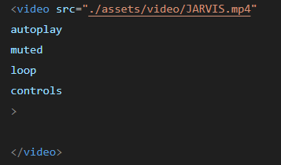
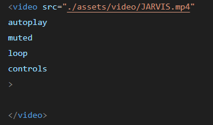

AUTOPLAY
Faz o vídeo começar a ser reproduzido automaticamente ao carregar a página.
MUTED
Define o vídeo como mudo desde o início.
LOOP
Faz o vídeo reiniciar automaticamente após terminar.
Faz o vídeo começar a ser reproduzido automaticamente ao carregar a página.
Define o vídeo como mudo desde o início.
Faz o vídeo reiniciar automaticamente após terminar.
